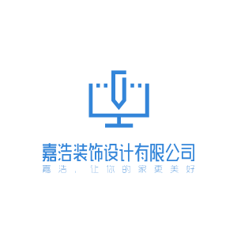

<!--左边博客列表模块-->
<div class="bloglist fl"></div>
<!--右边侧边栏模块-->
<div class="rightbox fr">
  <!--联系我-->
  <div class="contact">
    <h3 class="head-title">联系我</h3>
    <div class="contact-way">
      <ul>
        <li>
          <a class="wechat" href="#"></a>
          <div id="wechat"></div>
        </li>
        <li>
          <a class="qq" href="#"></a>
          <div id="qq"></div>
        </li>
        <li>
          <a class="weibo" href="#"></a>
          <div id="weibo"></div>
        </li>
        <li>
          <a class="github" href="https://github.com/caicaishmily" target="_blank"></a>
        </li>
      </ul>
    </div>
  </div>
  <!--推荐-->
  <div class="recommend">
    <h3 class="head-title">文章推荐</h3>
    <div class="recommend-list">

    </div>
  </div>
  <!--点击排行榜-->
  <div class="rank">
    <h3 class="head-title">点击排行</h3>
    <ul class="rank-list">
      
    </ul>
  </div>
  <!--广告-->
  <div class="ad">
    <a href="javascript:;"></a>  
  </div>
</div>
<div id="page" class="page_div clear"></div>


<script>
  // 首页：重新加载，文章一级分类、文章二级分类清空
  type1 = type2 = null;

  // 根据页码加载文章列表
  function getArtList(pno){
    $.ajax({
      type:'get',
      url:'http://127.0.0.1/myblog-wysiwyg/data/article/getArticle.php?type1=' + type1 + '&type2=' + type2,
      data: {pno:pno},
      success:(res)=>{
        $("#page").paging({
						pageNo: pno,
						totalPage: res.pageCount,
						totalSize: res.recordCount,
						callback: function(pno) {
							getArtList(pno);
						}
					});
        var bloglist = res.data;
        var html="";
        for(let item of bloglist){
          html += `
            <div class="blog">
              <h3><a data-id='${item.art_id}'>${item.art_title}</a></h3>
              <p>${item.art_des}</p>
              <p class="date">
                <span>${item.art_pubtime}</span>
                <span>博客分类：
                [<a class='art-type' onclick="getArtLsByType('${item.art_type1}', null)">${item.art_type1Desc}</a>/
                 <a class='art-type' onclick="getArtLsByType('${item.art_type1}', '${item.art_type2}')">${item.art_type2Desc}</a>]</span>
              </p>
            </div>
                  `;
        }
        $('.bloglist').html(html);
      },
      error:(err)=>{
        console.log(err);
      }
    });
  }

// 加载文章推荐
  function loadArtRecommend(res){
 // 文章推荐模块   根据查询内容排序显示技术文章和读书笔记中点击率最高的两篇
    let item = res.recommendList;
    $('.recommend-list').html(`<div>
        <a href="javascript:;">
          <span data-id='${item[0][0].art_id}'>${item[0][0].art_title}</span>
        </a>
        <p>
          <span class="tutime">[${item[0][0].art_type1Desc}/${item[0][0].art_type2Desc}]${item[0][0].art_pubtime}</span>
        </p>
      </div> 
      <div>
        <a href="javascript:;">
          <span data-id='${item[1][0].art_id}'>${item[1][0].art_title}</span>
        </a>
        <p>
          <span class="tutime">[${item[1][0].art_type1Desc}/${item[1][0].art_type2Desc}]${item[1][0].art_pubtime}</span>
        </p>
      </div> `);
  }


  // 加载文章排行
  function ajaxLoadArt(fn){
    var data = null;
    $.ajax({
      type:'get',
      url:'http://127.0.0.1/myblog-wysiwyg/data/article/getArtOrderByHits.php',
      error:(err)=>{
        console.log('err:' + err);
      }
    }).then(function(res) {
        fn(res);
    })
    
  }
// 加载文章排行列表
  function loadArtRank(result){
        let str='';
        var res = result.rankList;
        for(let temp of res){
          str += `
                  <li>
                    <a data-id='${temp.art_id}' title="${temp.art_title}">
                      [${temp.art_type1Desc}/${temp.art_type2Desc}]
                      ${temp.art_title}
                    </a>
                  </li>
                 `
        } 
        $('.rank-list').html(str); 
  };

$('.wechat').hover(function(){
  $('#wechat').toggle();
});
$('.weibo').hover(function(){
  $('#weibo').toggle();
});
$('.qq').hover(function(){
  $('#qq').toggle();
});


  // 页面加载
  $(function(){
    // 默认加载第一页
    getArtList(1);
    // 获取文章列表
    ajaxLoadArt(loadArtRank);
    ajaxLoadArt(loadArtRecommend);

    //点击文章标题显示文章内容 
    $('.bloglist').on('click','.blog>h3>a',function(e){
      e.preventDefault();
      let $e = $(e.target);
      var id = $e.attr('data-id');
      getArtContent(id);
    });

    //点击文章标题显示文章内容 
    $('.rank-list').on('click','li>a',function(e){
      e.preventDefault();
      let id = $(e.target).attr('data-id');
      getArtContent(id);
    });

    //点击推荐显示文章内容
    $('.recommend-list').on('click','div>a>span',function(e){
      let id = $(e.target).attr('data-id');
      getArtContent(id);
    });

  });


 
</script>